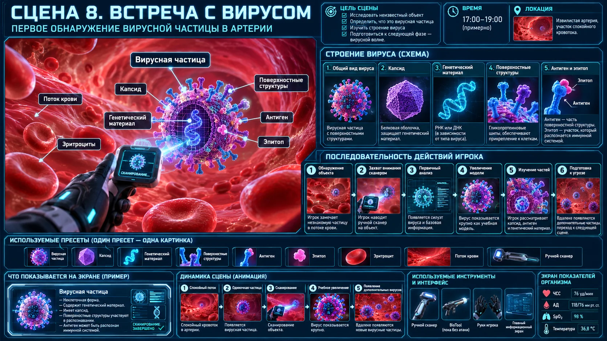

Scene 08 · 19:00–20:30
Первая встреча с вирусом
Научить сначала исследовать угрозу, а не атаковать её.

Сценарная последовательность
Заметить неизвестную частицу
Поймать сканером
Увеличить модель
Исследовать генетический материал/капсид/антиген
Выделить эпитоп
Отпустить частицу по потоку
Технические требования сцены
- При исследовании поток локально замедляется.
- Вирус увеличивается в учебном режиме, не меняя «реальный» биологический масштаб мира.